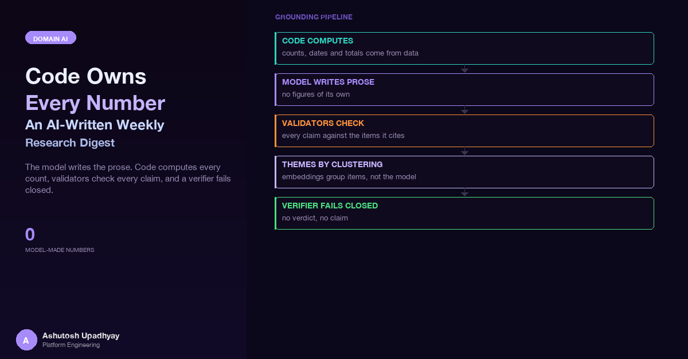

How a weekly research email keeps the model to prose: code computes every count, validators check every claim against the items it cites, and a fail-closed verifier has the last word.
The first dry run against a real, busy week looked good at first glance. The executive summary read well, and the theme section had sensible labels. Then I scrolled to the snapshot table and every "key result" cell was a dash, and the "how this connects" line under each related item was missing entirely. Nothing had errored. The job had finished, archived its output and reported success.
Two different causes were hiding behind those blanks. The missing lines were a validator being too strict about something harmless; the dashes were the fail-closed verifier doing exactly its job after the model declined to verify anything. Both are covered below, along with the validator that was too loose, which I found later. All of them come back to one design question: who owns the numbers.
This post is about that design. It is a weekly email that summarises a team's shared list of research findings for senior readers. The pipeline is built and verified on dry runs against real weeks. The interesting part is not the email. It is the rule that governs it: code owns every number, and the model only writes words that must point back at the items they came from.
The split in one sentence. Anything that can be counted, sorted, clustered or looked up is computed by code and rendered by code. The model writes prose, each claim carries the IDs of the items it rests on, and a bank of deterministic validators checks the prose against exactly those items before it is allowed into the email.
The ask was simple to state. A team keeps a shared list of research findings, each with a title, a free-text description, some structured fields such as platform and program, and a creation date. Someone wanted a weekly email that tells senior readers what is new, what changed, and how it fits the wider body of work. It had to carry real scientific detail, not a vague "exciting progress this week" paragraph, and it had to be right.
"Right" is the hard word. A weekly digest has three kinds of content, and they fail in different ways:
So the design assigns each kind to its natural owner. Code collects the week's items, computes every count and table, builds the embeddings-based structure, and renders the HTML. The model is asked for prose only, in a strict JSON shape, where every sentence names the item IDs it draws on. Then validators attack the prose.
The model never produces a digit the reader could mistake for a measurement of the portfolio. Anything numeric in its prose must already exist in the items it cites.
There are three model calls per run. A cards call and an editorial call run in parallel, and each has its own tolerant JSON parser and its own single retry, so one of them failing never throws away the other. A third call, the verifier, runs after both. I will come back to it, because it is the piece that fails closed.
Each validator exists because a class of error is plausible for a model and damaging for a reader. All examples below use made-up tokens.
| Validator | What it catches | Made-up example | Real bug it caught |
|---|---|---|---|
| Unknown IDs | A citation pointing at an item that is not in the window or the catalogue | "See item 9999" when no such item exists | None recorded; the cheapest check, run first |
| Ungrounded numbers and number words | A digit, or a spelled-out number, that is absent from every cited item | "Potency improved twelve-fold" when the cited text says "3-fold" | Substring matching let "12" ground against "0.125"; citation IDs read as numbers dropped every connection line |
| Count claims | Statements like "four studies this week" that the model cannot know | "Five programs reported results" | None recorded; a count is allowed only when the sentence cites exactly one item and the count is grounded in it |
| Names not in the cited item | Teams, platforms, functional groups or program names that the cited item does not carry | "Program A's screening platform" when the item belongs to another program | None recorded; a guard against misattribution between items |
| Gene-token matching | Identifier tokens that appear in the prose but not in the cited items, compared as whole tokens | "ABC1" must not ground against "ABC10" |
Compound forms such as ABC1xABC10 had to be split on both the claim and the source side |
| Modality words | A drug-modality word the item never used, even if it is a reasonable inference | "a multispecific approach" when the item says nothing of the kind | A correct inference was dropped; the fix was to allow modality words per item, from that item's own fields |
| Decision verbs (stemmed) | Words such as "selected", "advanced" or "nominated" that assert a decision the source does not record | "CMPD-0001 was advanced" when the item only describes an assay |
Stemming matters: "advanced" in the claim must find "advance" or "advancing" in the source |
| Units | A number carried with the wrong unit, or a unit swapped | "5 nM" when the source says "5 µM" | Value and unit must both match, not just the digits |
| Lineage verbs in connection lines | Causal or historical claims between two items ("builds on", "led to") | "Theme 1 work led to the newer result" | None recorded; dropped unless one of the two items already uses the verb |
| Theme labels | Labels whose content words do not appear across several members of the cluster | A label naming a modality that only one member mentions | None recorded; falls back to a generic "Unlabelled theme" with representative titles shown anyway |
Two design choices run through the whole table. First, the grounding corpus for a sentence is the union of everything in the items it cites: title, description, structured fields, platforms, teams. It is not the whole catalogue. A claim that is true of a different item is still a wrong claim, so a sentence can only lean on the evidence it names. Second, dropping is the default. A failed check removes the sentence or turns the field into a dash, rather than attempting to repair it. A repaired sentence is text the model never wrote and nobody reviewed.
This echoes the earlier post on silent wrong data: a check that passes, or fails, for the wrong reason with no error raised. Broader data-quality context is in the data-readiness post.
The first version of numeric grounding was the obvious one. Pull the numbers out of the model's sentence, and check that each appears in the text of the cited items. "Appears in" was written as a substring test, because that is what Python's in operator does.
# The first version. Looks right. Is not.
def grounded_buggy(claim_number: str, corpus: str) -> bool:
return claim_number in corpus
# claim says 12, corpus says "0.125 nM" -> "12" in "0.125 nM" is True
# claim says 3, corpus says "item 412" -> True as well
The right approach has two parts. Tokenise numbers on both sides with the same boundary rules, so 0.125 is one token and 12 is a different one. Then compare token sets. And before extracting numbers from the model's sentence, strip the citation IDs, because an ID like "item 412" is a label, not a measurement.
import re
# Citation markers look like "item 412", "items 7, 9 and 12" or "#57".
CITATION = re.compile(
r"\bitems?\s+#?\d+(?:\s*(?:,|and|&)\s*#?\d+)*|#\d+", re.I)
# A number token: not glued to a word or a preceding dot, keeps 0.125 whole.
NUMBER = re.compile(r"(?<![\w.])\d+(?:[.,]\d+)*(?!\w)")
WORDS = {"one": "1", "two": "2", "three": "3", "four": "4", "five": "5",
"six": "6", "seven": "7", "eight": "8", "nine": "9", "ten": "10"}
def numbers_in(text: str, strip_citations: bool) -> set[str]:
if strip_citations:
text = CITATION.sub(" ", text)
found = {m.group().replace(",", "") for m in NUMBER.finditer(text)}
for word, digit in WORDS.items(): # "three" grounds against "3"
if re.search(rf"\b{word}\b", text, re.I):
found.add(digit)
return found
def ungrounded_numbers(claim: str, cited_texts: list[str]) -> list[str]:
allowed = numbers_in(" ".join(cited_texts), strip_citations=False)
return sorted(numbers_in(claim, strip_citations=True) - allowed)
# ungrounded_numbers("Builds on item 412 with 12 nM",
# ["Binding improved to 0.125 nM; three replicates."])
# -> ["12"] (12 is not 0.125; 412 is a citation, not a number)
# ungrounded_numbers("Three replicates at 0.125 nM, see #57", same) -> []
The corpus side is not stripped: the source text is the ground truth. Only the claim is cleaned of its own citation markers, and number words ground symmetrically.
Gene and identifier tokens get the same treatment, because they fail the same way. A naive substring check lets ABC1 ground against a source that only mentions ABC10, which is a different entity entirely. The matcher pulls identifier-shaped tokens out of both sides, splits compound forms on both sides, and compares lowercase whole tokens.
GENE = re.compile(r"\b[A-Za-z]{2,}\d+[A-Za-z0-9]*\b")
SPLIT = re.compile(r"[×·-]|(?<=\d)x(?=[A-Za-z])") # ABC1xABC10, ABC1×ABC10
def gene_tokens(text: str) -> set[str]:
return {part.lower()
for tok in GENE.findall(text)
for part in SPLIT.split(tok) if part}
def ungrounded_genes(claim, cited_texts):
return sorted(gene_tokens(claim) - gene_tokens(" ".join(cited_texts)))
# ungrounded_genes("ABC10 only", ["ABC1 only"]) -> ["abc10"]
# ungrounded_genes("ABC1×ABC10 works", ["ABC1xABC10 study"]) -> []
Symmetry is the whole trick. Any normalisation you apply to the claim must also be applied to the source, with the same rules, or the two sides will disagree about what a token is. Most of the validator bugs I hit were asymmetries: one side split, the other did not; one side stripped, the other did not.
Fixtures written by the person who wrote the validators do not contain the shapes that break them. Real weeks did. These are the four that mattered, found on dry runs or by reading the code against them, none of them visible in a passing test suite.
The one above. A false pass produces no visible symptom at all, so it surfaced only in a line-by-line read of the code, never in any output.
The opposite failure, and the reason the connection lines in my cold open were missing. The connection lines the model wrote naturally cite the two items they link, for example "item 412 and item 57 share an assay format". The number extractor saw 412 and 57, looked for them in the source text, did not find them, and dropped the line as "ungrounded number". Every single connection line was dropped, because every connection line cites IDs by construction. The fix was the citation strip shown above. My first hypothesis was that the hash-prefixed form was the culprit, and I was wrong: it was the citations in general. The archived drop reasons are what pointed at the real cause.
A digit-plus-noun rule was meant to catch invented counts like "4 compounds". It also caught a program's own name, "Series 1 compounds", where the digit is part of a label and not a quantity. A validator that is too eager is a quiet way to make the email worse: the sentence vanished and nothing told the reader. The digit belonged to a name, so the rule needed to leave names alone.
This one was not a validator at all. The programs table in the portfolio statistics was rendered in the order the data arrived, and the top program was missing from it. Every number in the table was correct and the table was still misleading. Code owning the numbers does not mean the numbers are presented honestly; sorting is part of correctness. It is the same lesson as a counter that counts the wrong thing, which the silent-wrong-data post covers under its "counter is not a count" failure.
A green suite stood next to every one of these bugs; why tests can pass while unable to fail is covered in a separate post.
Deterministic validators can check that a number is present. They cannot check that it is attached to the right thing. "The lead candidate reached 5 nM" passes if "5 nM" appears somewhere in the cited item, even when it was the assay's control and not the candidate. So the third model call is a verifier. It receives each key result and each executive-summary bullet together with the full text of the items it cites, and returns a supported-or-not verdict per claim with a reason.
The important property is what happens when the verifier cannot deliver. If a verdict is missing, or the call fails outright, or there is no time budget left, the answer is "unsupported". A key result becomes a dash. An executive bullet is dropped. If the whole call fails, the executive summary falls back to a plain sentence written by code from the counts and the titles. The email gets sparser; it never gets less true.
That property was tested the hard way. On one early dry run the stronger model refused to act as the verifier at all. It returned an HTTP 200 with a refusal stop reason and no content. Because the verifier was fail-closed, the dry-run email that week was thin but contained nothing unverified. The whole refusal story, and the fallback that now handles it, is in its own post. For this design the point is only this: the verifier's default outcome has to be the safe one.
Senior readers like a "what are the themes" section, and it is tempting to ask a model to invent them. Here code finds the themes and the model only names them.
Each finding has a text embedding. For every finding created before the end of the window, the vectors are normalised and clustered with Ward linkage into a fixed k=10 clusters. Fixing k matters for stability; a data-driven k would reshuffle the themes week to week and make the section impossible to compare across emails. Each cluster gets a cohesion score, the mean pairwise cosine similarity excluding the diagonal. Clusters below 0.30 are too loose to call a theme, so they are merged into a single "cross-cutting" line that never counts among the themes. Of the rest, the top 6 by recent activity are shown, each with its counts and a few representative members chosen by closeness to the cluster's medoid.
Related earlier work uses the same vectors. For each item in the window, the nearest earlier items by cosine similarity are candidates if they clear a similarity threshold of 0.45. Only one item per series is kept, so a program's five near-duplicate entries do not crowd out a genuinely different relative. Items created in the same window are not "earlier work" for each other; two sibling findings this week are shown as companions sharing one block.
The model's role here is small and constrained: write a label for each cluster, and the label goes through the validators. A label is accepted only if its identifier tokens are grounded and every content word appears in at least two members' titles or descriptions. Otherwise the label is "Unlabelled theme", and the representative titles still tell the story. The structure is reproducible and the words are checked, which is the same split as before applied at the section level.
Every run writes three artefacts to durable storage: a JSON record, the rendered HTML and the complete email message. The JSON holds the window, counts, themes with cohesion, related work with similarities, per-call latency and tokens, every validator drop with its reason, and the verifier verdicts. When a reader asks why a sentence is missing, the answer is a lookup, not an investigation.
Each run emits a metric dimensioned by how it was triggered (a button, a job, or a shell command) and by outcome, including whether any model-written section survived or the email was code-only. A failed or unknown run sends an email to the sender address, so the failure arrives in the same place the success would have. "Unknown" is a real outcome: if the mail server times out after the message body has been handed over, you cannot know whether it was delivered, and you must not retry, because a retry can duplicate it.
The most useful tool was the ability to run the whole pipeline against a historical window and stop before sending. A quiet week flatters every design. A busy week is where prompts get long, validators get exercised, and memory and time budgets show up. On the busy-week dry run the email came to 10 figures at 0.76 MB. The narrative stage took about 81 s in total, with the cards call at 32 s and the editorial call at 71 s running in parallel. Peak resident memory was 272 MB. Those numbers are the kind of thing you want to know before a design is called finished, and a dry run on last month's busiest week gives them to you without emailing anyone.
The operator page shows a step row (collect, narrate, render, send) and a table of recent runs. The naive design keeps run state in memory in the process that started the run. That cannot work here. The API runs as several processes (replicas times workers), so a status request can land on a process that never saw the run, and a run started by a job or a shell command is invisible to all of them. Instead, each run writes a durable record as it progresses, and the page reads the records. Any process can answer, and runs started from anywhere look the same.
The page also has a preview of any archived run. It rebuilds the email from the archived message, embeds the figures as inline data, and serves the body only, under a restrictive content-security policy with the sandbox directive. It never returns the recipient list; the preview endpoint reads the message body and discards the headers that carry addresses. A tool that lets someone see what was sent should not double as a way to see who it was sent to.
Desktop Outlook renders HTML with a word-processor engine, and most of what you know about modern CSS does not apply. I learned the hard way about bars that looked perfect in a browser and were invisible in Outlook. These are the rules that held up:
width attributes. Do not rely on max-width as the only width control, and do not use flexbox.div with a width and a background renders as nothing.data: images in the email itself. Figures travel as attachments referenced by content ID: the header carries the ID in angle brackets, the src uses it without them, and the disposition is inline. The message is a related multipart wrapping an alternative multipart, with width and height attributes on every image.The uncomfortable part of this design is that every validator trades false passes for false drops, and the right balance can only be found by looking at what was dropped. That is the next thing I want to build.
The archive already records every sentence a validator dropped, with the rule that dropped it. The natural next step is to put human labels on those drops. Each week, a reviewer would open a small random sample of dropped sentences and mark each one right (it really was unsupported) or wrong (it was fine and the validator was too strict). After a few weeks that yields a measured false-drop rate per validator, instead of an intuition. Validators that cut good content can then be loosened with evidence, and the ones that are consistently right can be left alone. It turns tuning from a reaction to the last embarrassing email into a steady, measurable loop.
ABC1 pass against ABC10. Tokenise both sides with the same rules, including splitting compound identifiers.